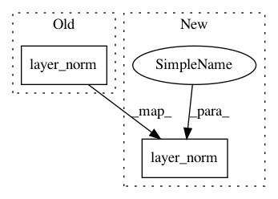

33b341d1f8c6397b547f12ae2d5937bf5e2fd1ec,transformer/SubLayers.py,PositionwiseFeedForward,forward,#PositionwiseFeedForward#,75
Before Change
output = F.relu(self.w_1(x.transpose(1, 2)))
output = self.w_2(output).transpose(2, 1)
output = self.dropout(output)
return self.layer_norm(output + residual)
After Change
output = self.w_2(F.relu(self.w_1(output)))
output = output.transpose(1, 2)
output = self.dropout(output)
output = self.layer_norm(output + residual)
return output
In pattern: SUPERPATTERN
Frequency: 3
Non-data size: 2
Instances
Project Name: jadore801120/attention-is-all-you-need-pytorch
Commit Name: 33b341d1f8c6397b547f12ae2d5937bf5e2fd1ec
Time: 2018-08-22
Author: yhhuang@nlg.csie.ntu.edu.tw
File Name: transformer/SubLayers.py
Class Name: PositionwiseFeedForward
Method Name: forward
Project Name: OpenNMT/OpenNMT-tf
Commit Name: 0748980bd54641e0c674a41b81a4ca19d7ec8149
Time: 2021-02-23
Author: guillaumekln@users.noreply.github.com
File Name: opennmt/encoders/self_attention_encoder.py
Class Name: SelfAttentionEncoder
Method Name: call
Project Name: OpenNMT/OpenNMT-tf
Commit Name: 0748980bd54641e0c674a41b81a4ca19d7ec8149
Time: 2021-02-23
Author: guillaumekln@users.noreply.github.com
File Name: opennmt/decoders/self_attention_decoder.py
Class Name: SelfAttentionDecoder
Method Name: _run